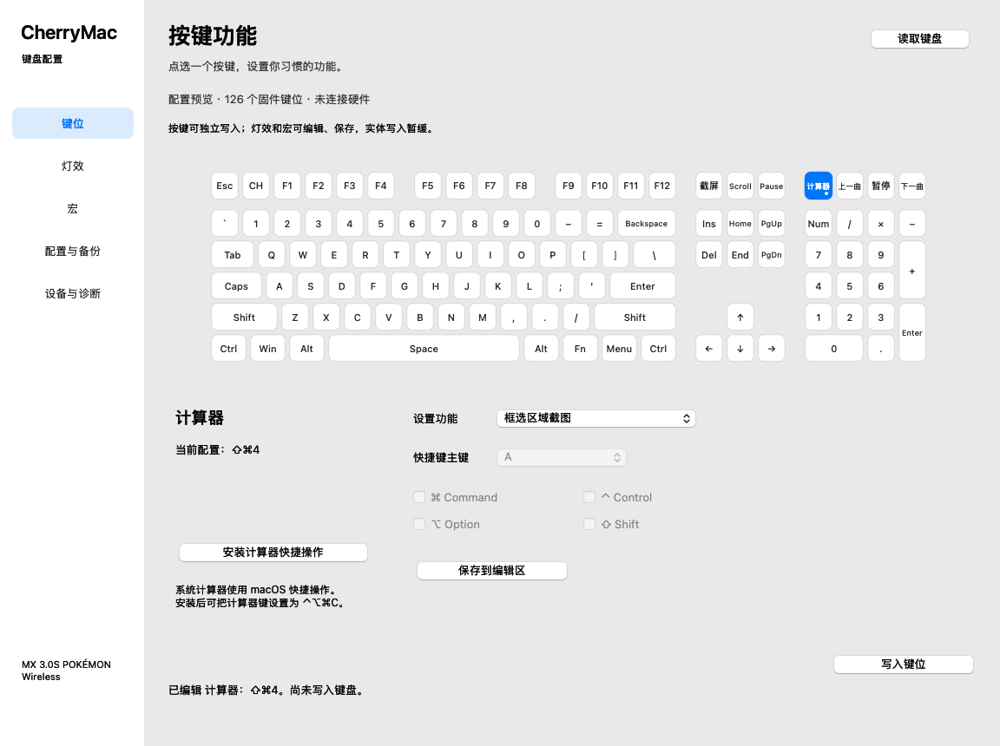

按键与组合键
媒体键、快捷组合、禁用按键。写入前备份，写入后读取核对。

媒体键、快捷组合、禁用按键。写入前备份，写入后读取核对。
编辑逐键静态颜色与内置灯效参数，保存在配置文件中。
编辑宏事件、延迟与播放方式，导入 Windows 键盘配置。
当前支持范围 按键支持独立写入；宏与文本提供开发预览，灯效可编辑、保存，普通版暂不写灯效。新版各模块尚待统一真机验收，开发预览不等于完整成品。
Mac 客户端提供配置、备份与独立的 Mac 端快捷键适配。下载前查看最新版本说明与设备限制。
下载 Mac 0.48.0 预览版 ↗Apple Silicon · macOS 13+ · 尚待统一真机验收
支持型号：CHERRY MX 3.0S 宝可梦无线键盘。
网页：Chrome / Edge，HTTPS，有线 USB 连接。
Mac 客户端：macOS 13+；芯片支持以对应发布包为准。
阅读网页版使用说明 ↗